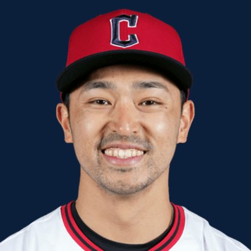

BASEBALLKEEP
Dynasty · Redraft · Diamond
Player File · OF CLE

Steven Kwan
#38 · OF · Cleveland Guardians · age 28 · B/T LL · 5' 8" / 170 lbs · MLB debut 2022 · Los Gatos, USA
Hitting
| Year | G | AB | R | H | 2B | HR | RBI | SB | BB | SO | AVG | OBP | SLG | OPS |
|---|---|---|---|---|---|---|---|---|---|---|---|---|---|---|
| 2026 | 117 | 405 | 57 | 107 | 15 | 2 | 23 | 9 | 64 | 49 | .264 | .368 | .326 | .694 |
| 2025 | 156 | 625 | 81 | 170 | 29 | 11 | 56 | 21 | 55 | 60 | .272 | .330 | .374 | .704 |
Plus
- Keep #146 on the 300. Tradable, not a 1.01.
- On 12 boards — not a one-list darling.
Minus
- The rank is the comment until the next IL stint.
BaseBallKeep Take
Steven Kwan is #146 on BaseBallKeep's overall dynasty 300, a 23-source mix anchored by RotoGraphs (Aug 14) and The Dynasty Guru points list (Aug 10). OF for CLE. Lineup #104. Rest-of-season redraft #143. MLB since 2022. From Los Gatos / USA. Bats L, throws L.
BK Value on this rank is 447. Same decaying curve as football: 12,000 at 1.01, a late first a fraction of that. If someone is asking for two firsts, run the calculator. 2026 line: .264 / 2 HR / 9 SB / .694 OPS in 117 games.
The 23-board average is 144.5 on 12 lists that actually ranked him — unranked sources are skipped, never treated as 999. High 134, low 154.
Dynasty pays the next five years. Redraft pays September. If those two ranks diverge, that is the instruction: hold the kid or cash the veteran.
Flags fly forever. We will refresh this file with The Keep. September baseball is a proving ground, not a coronation.
Every Board
Spread 134–154 · 12 sources
| Source | Rank |
|---|---|
| TDG Points | 134 |
| RotoWire | 137 |
| FanGraphs The Board | 137 |
| Ottoneu | 144 |
| Dynasty League Baseball | 144 |
| FantasyPros Dynasty ECR | 145 |
| ESPN | 146 |
| NFBC ADP | 146 |
| ATC ROS | 146 |
| Razzball | 147 |
| Baseball Prospectus | 154 |
| The Dynasty Dugout | 154 |
On The Keep nearby — Seth Hernandez (#144) · Joshua Baez (#145) · Jo Adell (#147) · Moisés Ballesteros (#148)
Same position on the 300 — Juan Soto #3 · Aaron Judge #6 · James Wood #8 · Pete Crow-Armstrong #11 · Corbin Carroll #15 · Julio Rodríguez #19
All players · The Keep · The Lineup · Pitchers · Calculator